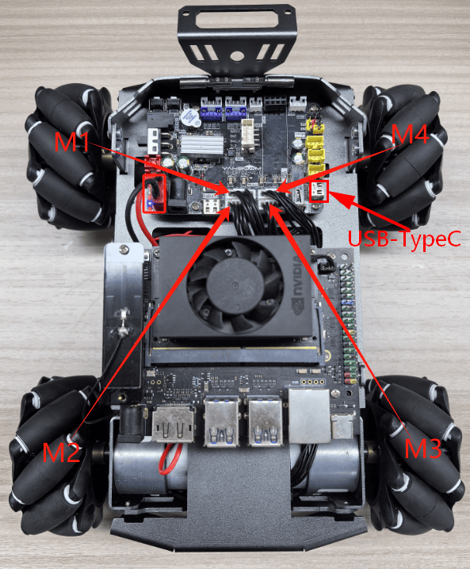
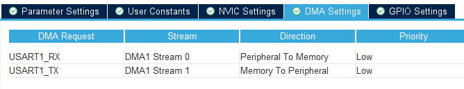
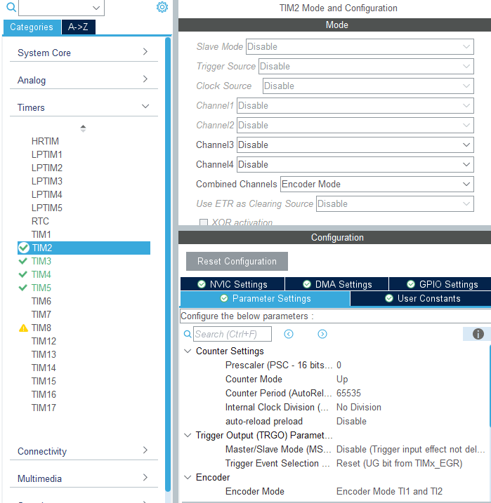
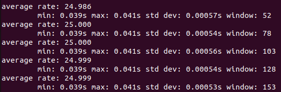
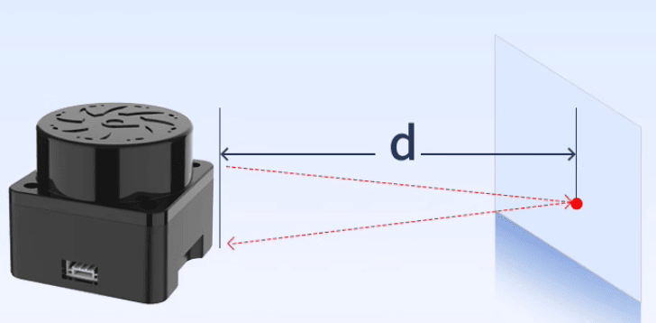
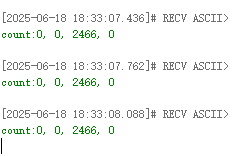

Считывание данных энкодера мотора
-
- Цель эксперимента
-
- Подключение оборудования
-
- Анализ основного кода
-
- Компиляция, загрузка и прошивка firmware
-
- Результаты эксперимента
1. Цель эксперимента
Использование интерфейса мотора с энкодером на плата управления STM32 и изучение применения таймера STM32 для подсчёта импульсов энкодера мотора.
2. Подключение оборудования
Как показано на рисунке ниже, плата управления STM32 имеет четыре встроенных интерфейса управления моторами с энкодером. Для этого требуется дополнительно подключить мотор с энкодером. Интерфейс управления моторами поддерживает моторы с энкодером типа 520. Поскольку моторы с энкодером требуют высокого напряжения и тока, их необходимо питать от батареи.
Подключите кабель Type-C к USB-порту компьютера и порту USB Connect на плата управления STM32.
Соответствие названий четырёх интерфейсов моторов: переднее левое колесо → M1, заднее левое колесо → M2, переднее правое колесо → M3, заднее правое колесо → M4.

Соответствие GPIO для энкодера мотора показано в таблице ниже:




| Сигнал энкодера интерфейса мотора | Номер GPIO STM32 | Канал таймера STM32 |
|---|---|---|
| H1A | PB4 | TIM3_CH1 |
| H1B | PB5 | TIM3_CH2 |
| H2A | PA15 | TIM2_CH1 |
| H2B | PB3 | TIM2_CH2 |
| H3A | PA0 | TIM5_CH1 |
| H3B | PA1 | TIM5_CH2 |
| H4A | PD12 | TIM4_CH1 |
| H4B | PD13 | TIM4_CH2 |
3. Анализ основного кода
Путь к исходному коду программы:
Board_Samples/STM32_Samples/Encoder
Поскольку процесс инициализации четырёх энкодеров моторов схож, установите каналы 1 и 2 таймера в режим энкодера и настройте триггеры по нарастающему и спадающему фронту. Так как таймеры TIM2 и TIM5 являются 32-битными, а TIM3 и TIM4 — 16-битными, для упрощения расчётов максимальное значение счёта единообразно установлено на 65535. В этом примере рассматривается инициализация энкодеров для таймеров TIM2 и TIM3.
void MX_TIM2_Init(void)
{
TIM_Encoder_InitTypeDef sConfig = {0};
TIM_MasterConfigTypeDef sMasterConfig = {0};
/* USER CODE BEGIN TIM2_Init 1 */
/* USER CODE END TIM2_Init 1 */
htim2.Instance = TIM2;
htim2.Init.Prescaler = 0;
htim2.Init.CounterMode = TIM_COUNTERMODE_UP;
htim2.Init.Period = 65535;
htim2.Init.ClockDivision = TIM_CLOCKDIVISION_DIV1;
htim2.Init.AutoReloadPreload = TIM_AUTORELOAD_PRELOAD_DISABLE;
sConfig.EncoderMode = TIM_ENCODERMODE_TI12;
sConfig.IC1Polarity = TIM_ICPOLARITY_RISING;
sConfig.IC1Selection = TIM_ICSELECTION_DIRECTTI;
sConfig.IC1Prescaler = TIM_ICPSC_DIV1;
sConfig.IC1Filter = 0;
sConfig.IC2Polarity = TIM_ICPOLARITY_RISING;
sConfig.IC2Selection = TIM_ICSELECTION_DIRECTTI;
sConfig.IC2Prescaler = TIM_ICPSC_DIV1;

sConfig.IC2Filter = 0;
if (HAL_TIM_Encoder_Init(&htim2, &sConfig) != HAL_OK)
{
Error_Handler();
}
sMasterConfig.MasterOutputTrigger = TIM_TRGO_RESET;
sMasterConfig.MasterSlaveMode = TIM_MASTERSLAVEMODE_DISABLE;
if (HAL_TIMEx_MasterConfigSynchronization(&htim2, &sMasterConfig) != HAL_OK)
{
Error_Handler();
}
}
void MX_TIM3_Init(void)
{
TIM_Encoder_InitTypeDef sConfig = {0};
TIM_MasterConfigTypeDef sMasterConfig = {0};
/* USER CODE BEGIN TIM3_Init 1 */
/* USER CODE END TIM3_Init 1 */
htim3.Instance = TIM3;
htim3.Init.Prescaler = 0;

htim3.Init.CounterMode = TIM_COUNTERMODE_UP;
htim3.Init.Period = 65535;
htim3.Init.ClockDivision = TIM_CLOCKDIVISION_DIV1;
htim3.Init.AutoReloadPreload = TIM_AUTORELOAD_PRELOAD_DISABLE;
sConfig.EncoderMode = TIM_ENCODERMODE_TI12;
sConfig.IC1Polarity = TIM_ICPOLARITY_RISING;
sConfig.IC1Selection = TIM_ICSELECTION_DIRECTTI;
sConfig.IC1Prescaler = TIM_ICPSC_DIV1;
sConfig.IC1Filter = 0;
sConfig.IC2Polarity = TIM_ICPOLARITY_RISING;
sConfig.IC2Selection = TIM_ICSELECTION_DIRECTTI;
sConfig.IC2Prescaler = TIM_ICPSC_DIV1;
sConfig.IC2Filter = 0;
if (HAL_TIM_Encoder_Init(&htim3, &sConfig) != HAL_OK)
{
Error_Handler();
}
sMasterConfig.MasterOutputTrigger = TIM_TRGO_RESET;
sMasterConfig.MasterSlaveMode = TIM_MASTERSLAVEMODE_DISABLE;
if (HAL_TIMEx_MasterConfigSynchronization(&htim3, &sMasterConfig) != HAL_OK)
{
Error_Handler();
}
}
При инициализации запустите каналы 1 и 2 таймеров TIM2, TIM3, TIM4 и TIM5.
void Encoder_Init(void)
{
HAL_TIM_Encoder_Start(&htim2, TIM_CHANNEL_1 | TIM_CHANNEL_2);
HAL_TIM_Encoder_Start(&htim3, TIM_CHANNEL_1 | TIM_CHANNEL_2);
HAL_TIM_Encoder_Start(&htim4, TIM_CHANNEL_1 | TIM_CHANNEL_2);
HAL_TIM_Encoder_Start(&htim5, TIM_CHANNEL_1 | TIM_CHANNEL_2);
}
Получение буферизованного значения данных энкодера.
static int Encoder_Read_CNT(uint8_t Encoder_id)
{
int Encoder_TIM = 0;
switch(Encoder_id)
{
case ENCODER_ID_M1: Encoder_TIM = (short)TIM3 -> CNT; TIM3 -> CNT = 0; break;
case ENCODER_ID_M2: Encoder_TIM = (long)TIM2 -> CNT; TIM2 -> CNT = 0; break;
case ENCODER_ID_M3: Encoder_TIM = (long)TIM5 -> CNT; TIM5 -> CNT = 0; break;
case ENCODER_ID_M4: Encoder_TIM = (short)TIM4 -> CNT; TIM4 -> CNT = 0; break;
default: break;
}
return Encoder_TIM;
}
Чтобы вовремя обновлять суммарное значение счётчика энкодера, эту функцию необходимо вызывать каждые 10 миллисекунд.
void Encoder_Update_Count(void)
{
// g_Encoder_M1_Now -= Encoder_Read_CNT(ENCODER_ID_M1);
// g_Encoder_M2_Now -= Encoder_Read_CNT(ENCODER_ID_M2);
// g_Encoder_M3_Now += Encoder_Read_CNT(ENCODER_ID_M3);
// g_Encoder_M4_Now += Encoder_Read_CNT(ENCODER_ID_M4);
g_Encoder_M1_Now += Encoder_Read_CNT(ENCODER_ID_M1);
g_Encoder_M2_Now += Encoder_Read_CNT(ENCODER_ID_M2);
g_Encoder_M3_Now -= Encoder_Read_CNT(ENCODER_ID_M3);
g_Encoder_M4_Now -= Encoder_Read_CNT(ENCODER_ID_M4);
}
По значению Encoder_id считывается суммарный счёт энкодера с момента включения соответствующего канала до текущего момента.
int Encoder_Get_Count_Now(uint8_t Encoder_id)
{
if (Encoder_id == ENCODER_ID_M1) return g_Encoder_M1_Now;
if (Encoder_id == ENCODER_ID_M2) return g_Encoder_M2_Now;
if (Encoder_id == ENCODER_ID_M3) return g_Encoder_M3_Now;
if (Encoder_id == ENCODER_ID_M4) return g_Encoder_M4_Now;
return 0;
}
Также можно получить значения энкодеров всех четырёх моторов за один вызов.
void Encoder_Get_ALL(int* Encoder_all)
{
Encoder_all[0] = g_Encoder_M1_Now;
Encoder_all[1] = g_Encoder_M2_Now;
Encoder_all[2] = g_Encoder_M3_Now;
Encoder_all[3] = g_Encoder_M4_Now;
}
Значение энкодера, соответствующее одному полному оборотю колеса, определяется как: коэффициент редукции × число линий энкодера × число каналов × число источников триггера сигнала.
В качестве примера возьмём мотор M3 робота. Параметры: коэффициент редукции — 56, число линий энкодера — 11, число каналов (два датчика Холла) — 2, источники триггера сигнала (включая нарастающий и спадающий фронт) — 2. Рассчитанное значение энкодера на один оборот колеса составляет приблизительно 2464.
#define ENCODER_CIRCLE (2464)
Вызовите функцию Encoder_Init в App_Handle для инициализации энкодеров моторов. В цикле выводите накопленные значения счётчиков импульсов четырёх энкодеров моторов раз в 300 миллисекунд.
void App_Handle(void)
{
uint8_t print_count = 0;
int g_Encoder_Now[4] = {0};
Encoder_Init();
HAL_Delay(100);
while (1)
{
Encoder_Update_Count();
Encoder_Get_ALL(g_Encoder_Now);
print_count++;
if (print_count >= 30)
{
print_count = 0;
printf("count:%d, %d, %d, %d\n", g_Encoder_Now[0], g_Encoder_Now[1],
g_Encoder_Now[2], g_Encoder_Now[3]);
}
App_Led_Mcu_Handle();
HAL_Delay(10);
}
}
4. Компиляция, загрузка и прошивка firmware
Выберите проект для компиляции в панели управления файлами STM32CubeIDE и нажмите кнопку компиляции на панели инструментов, чтобы начать сборку.
Если ошибок и предупреждений нет, компиляция завершена.
Нажмите и удерживайте кнопку BOOT0, затем нажмите кнопку RESET для сброса, отпустите кнопку BOOT0, чтобы войти в режим прошивки через последовательный порт. Затем используйте инструмент прошивки через последовательный порт, чтобы записать firmware на плату.
Если у вас есть ST-LINK или J-Link, можно также использовать STM32CubeIDE для прошивки firmware одним нажатием — это более удобно и быстро.
5. Результаты эксперимента
Светодиод MCU_LED мигает каждые 200 миллисекунд.
Возьмём мотор 3 в качестве примера: при вращении колеса вперёд данные энкодера накапливаются. При повороте колеса вперёд на один оборот данные энкодера увеличиваются приблизительно на 2464. Из-за некоторой погрешности при ручном повороте значения могут немного отличаться — это нормально, если разница не слишком велика.


Нажмите кнопку сброса (RESET) на плата управления STM32, чтобы сбросить значение до 0.
При вращении колеса назад данные энкодера уменьшаются. Если колесо совершает оборот назад, значение уменьшается приблизительно на 2464.
